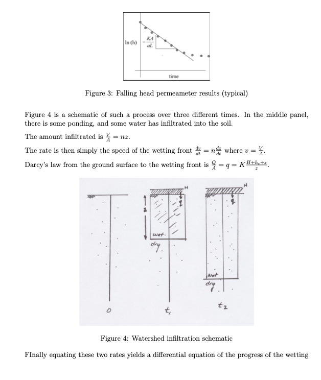
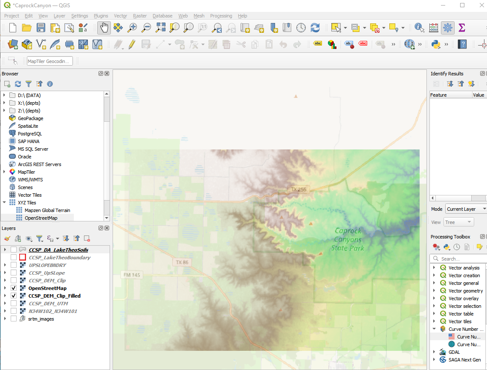
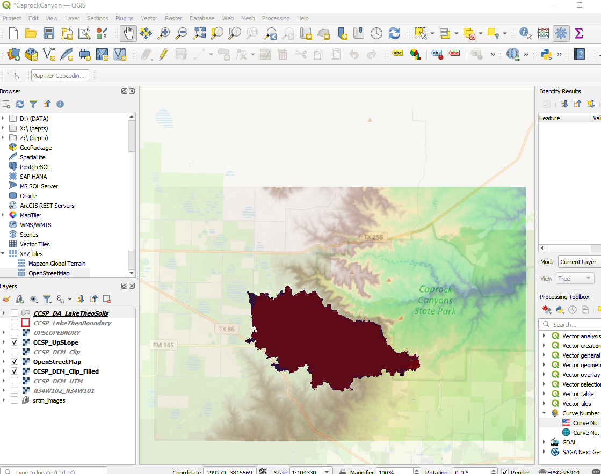
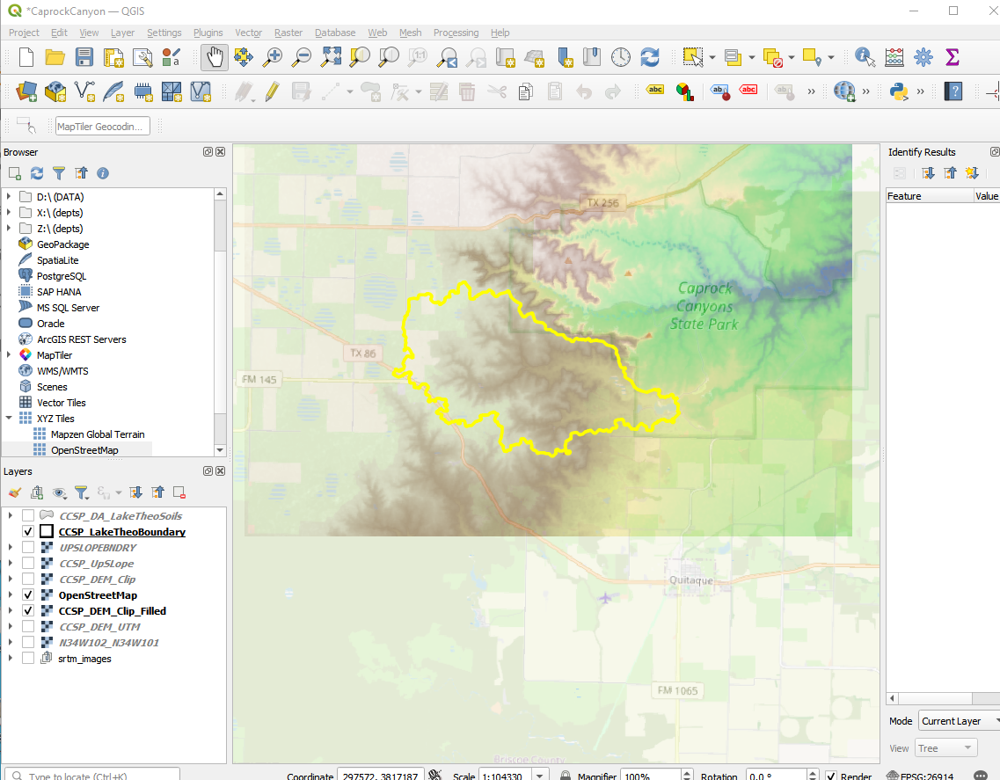

9. Hydrologic Abstractions¶
Hydrologic abstractions refer to the various processes through which water is removed from the precipitation signal (or land surface) and eventually returning to the atmosphere compartment. The difference between input and abstraction, is the runoff.
Course Website
Readings¶
Chow, V.T., Maidment, D.R., Mays, L.W., 1988, Applied Hydrology: New York, McGraw-Hill. pp. 80-91
Gupta, R.S., 2017. Hydrology and Hydraulic Systems, pp. 65-88; pp. 93-111
Chow, V. T., 1964. Handbook of Applied Hydrology. McGraw Hill, New York. Sec. 14., 2pp.
Wurbs and James, 2002. Water Resources Engineering. Prentice-Hall, New Jersey. Pp 462-483.
Polubarinova-Kochina, 1962. Theory of Groundwater Movement, (Translated from Russian by R. De Wiest), Princeton University Press, New Jersey.
Spreadsheets¶
Green-Ampt Spreadsheet (Excel) Right-Click “Save As…”
Blaney-Criddle Spreadsheet (Excel) Right-Click “Save As…”
Thornwaithe Spreadsheet (Excel) Right-Click “Save As…”
Videos¶
Outline¶
Infiltration
Evapotranspiration
Interception
Abstractions¶
Hydrologic abstractions refer to the various processes through which water is removed from the precipitation signal (or land surface) and eventually returning to the atmosphere compartment. These abstractions play a crucial role in the water cycle. Three major categories of abstraction are listed below:
Loss to the soil column comprised of:
Infiltration: The process by which water on the ground surface enters the soil. It is a key component of groundwater recharge.
Percolation: The downward movement of water through soil and rock layers beyond the root zone of plants. This contributes to the recharge of aquifers.
Evapotranspiration comprised of:
Evaporation: The process by which water changes from a liquid to a gas (water vapor) and enters the atmosphere. This occurs from open water surfaces, soil, and vegetation.
Transpiration: The release of water vapor from plants into the atmosphere through small pores in their leaves, stems, and other parts. It is essentially the plant version of evaporation.
Sublimation: The direct transition of water from a solid (ice or snow) to a gas without passing through the liquid phase. This can occur in cold climates with significant snow cover.
Temporary storage on or near the surface comprised of:
Interception: The capture of precipitation by vegetation before it reaches the ground. This water can later evaporate or be released to the ground surface.
Surface Water Storage: The temporary storage of water in depressions, ponds, lakes, and other surface water bodies before it is evaporated, infiltrated, or discharged (to the runoff component).
The remainder in the water balance between precipitation (the input) and abstractions (the losses) is watershed runoff (the output). It typically represents the flow of water over the land surface when the rate of precipitation exceeds the rate of abstraction. It includes surface water runoff and subsurface flow.
Evaporation and Transpiration¶
Infiltration¶
Infiltration is a complex process influenced by multiple factors such as soil characteristics, land use, slope, vegetation cover, precipitation intensity, and human activities. The soil’s permeability, texture, structure, and moisture content significantly impact infiltration rates. Coarse soils with higher permeability tend to have higher infiltration rates compared to fine-textured soils like clay.
Importance and Roles:¶
Infiltration plays important roles in:
Water Availability: Infiltration governs the replenishment of groundwater resources, contributing to the sustained flow of streams and rivers during dry periods. A high infiltration rate allows water to percolate deeper into the soil, recharging aquifers and maintaining base flow in rivers.
Flood Mitigation: Adequate infiltration helps prevent surface runoff, reducing the risk of flooding by allowing water to infiltrate into the soil, thus delaying the onset of overland flow.
Water Quality: Infiltration acts as a natural filter, removing pollutants and impurities as water percolates through the soil. However, excessive or improper land use can compromise this filtration capacity, leading to contamination of surface water resources.
Factors Affecting Infiltration Processes:¶
Land Use: Urbanization and deforestation can reduce natural infiltration rates due to increased impervious surfaces, resulting in enhanced surface runoff and decreased groundwater recharge.
Climate Change: Alterations in precipitation patterns and intensities due to climate change can affect infiltration rates, potentially leading to soil erosion and reduced water infiltration capacities.
Soil Management Practices: Techniques such as cover cropping, no-till agriculture, and contour plowing can help enhance soil structure and organic matter, promoting better infiltration.
Engineering Enhancement Strategies:¶
Green Infrastructure: Implementing green spaces, permeable pavements, and rain gardens in urban areas can enhance infiltration rates and decrease surface runoff.
Soil Conservation: Practices like terracing, contour farming, and agroforestry aid in reducing soil erosion, enhancing soil structure, and preserving natural infiltration capacities.
Education and Regulation: Public awareness campaigns and policies regarding responsible land use and water management can aid in preserving natural infiltration processes.
Infiltration Models¶
Examination of various process models at
Infiltration Process Description¶
Water that soaks into the ground and thereby enters the soil structure is considered removed from the runoff process at the time it enters the soil. The process by which this occurs is called infiltration. This process is the first step in a lengthy and vital process, the interaction of soil, water, air, and plant life.
The soil matrix in its simplest form consists of particles of soil (minerals) loosely packed together in such a way that there are void spaces (pores). The pores are filled by either air or by water. If the voids are completely filled with water, the soil is said to be saturated. If a volume of saturated soil overlies something that does not block flow, some of the water contained in it will drain away, and some will remain trapped in the pore spaces in the soil by capillary forces. The size of the pore spaces in natural soils is such that capillary forces are important in the movement of water through them. The amount of water that drains through is called gravitational water, and is particular to the soil, as is the amount retained. The water retained balances forces between gravity and capillarity, and maintains equilibrium.
Plants have roots that penetrate the upper soil layers, and remove water held there by cap-illarity. The upper layers of soil are thereby unbalanced, having capillary potential available to take up water. When rain falls on such a soil, there are initially two forces driving water into the soil- gravity and capillarity. If sufficient rain is available, the upper layers of the soil will become saturated, and the water will proceed downward. Due to the dual forces of capillarity and gravity, the initial rate of uptake of water may be quite high. As the capillary force is satisfied, gravity becomes the only force and the rate of uptake reaches an equilibrium value, as gravitational water drains through the soil.
The progress of this phenomenon can be shown graphically sketch on board. Initially, the rate of infiltration is quite high, and it decays to a steady-state value as a first-order function of time.
Mathematically, there have been a number of relationships proposed to represent this progress. Collectively these equations represent different loss models. They are all attempts to explain a complex phenomenon currently beyond our understanding at any but the smallest scales. What follows are the set of more common models in use.
Proportional Loss Model¶
The loss is some proportion of the incoming rainfall. Somewhat similar in mindset to the rational method, but every rainfall pulse produces runoff (albeit possibly quite small). It does produce good mass balance with observations.
Horton’s Model¶
Hortons equation is one of the simpler, and is presented here:
where \(q(t)\) = the infiltration rate at time \(t\), in length/time;
\(f_c\) = the equilibrium infiltration rate, in length/time;
\(f_o\) = the initial infiltration rate, in length/time;
\(k\) = a decay constant, particular to the soil, in reciprical time;
\(t\) = time.
The integral of Hortons equation with time is the volume of rainfall that infiltrates during an event.
where I(t) is cumulative infiltration at time t, a depth. The parameters in Hortons equation can be determined for any give soil by infiltrometer tests. The parameters in Hortons equation can be determined for any give soil by infiltrometer tests. A script to generate a graph of Hortons equation for \(f_c = 0.53~in/hr\), \(f_o = 3~in/hr\), and \(k = 4.182~hr^{−1}\) is listed below.
In the script below the input precipitation is set to slightly exceed the initial rate so that runoff is generated immediately, its mostly to show a runoff plot but is ancillary to the example.
## Hortonian Infiltration Excess Model
import math
howmany = 1000
k = 4.182 # watershed infiltration excess decay constant
f0 = 3.0 # initial infiltration rate
fC = 0.53 # asymptotic infiltration rate
#
pRate = 3.0001 # some constant rate in excess of fC, for plotting only!
Tend = 5.0 # rainfall duration
def qfunc(f0,fC,kay,time):
qfunc = fC+(f0 - fC)*math.exp(-time*kay)
return(qfunc)
def peein(rate,time,tend): # a simple hyetograph model
if time >= tend:
peein=0.0
else:
peein=rate
return(peein)
qnow = [0 for i in range(howmany)]
CumQnow = [0 for i in range(howmany)]
CumPnow = [0 for i in range(howmany)]
PXSnow = [0 for i in range(howmany)]
time = [0 for i in range(howmany)]
deltat = 0.004 # time step value
# time zero values
qnow[0]=qfunc(f0,fC,k,time[0])
for itime in range(1,howmany):
time[itime] = deltat+time[itime-1]
qnow[itime]=qfunc(f0,fC,k,time[itime])
CumQnow[itime]=qnow[itime]*deltat + CumQnow[itime-1]
# rnow[itime]=alpha*qfunc(peein,time[itime],alpha)
PXSnow[itime]=peein(pRate,time[itime],Tend)*time[itime]-CumQnow[itime]
CumPnow[itime]=peein(pRate,time[itime],Tend)*time[itime]
import matplotlib.pyplot # the python plotting library
myfigure = matplotlib.pyplot.figure(figsize = (10,5)) # generate a object from the figure class, set aspect ratio
# Built the plot
#matplotlib.pyplot.plot(pnow, pnow, color ='blue')
matplotlib.pyplot.plot(time, qnow, color ='orange')
matplotlib.pyplot.plot(time, CumQnow, color ='green')
matplotlib.pyplot.plot(time, PXSnow, color ='red')
matplotlib.pyplot.plot(time, CumPnow, color ='blue')
matplotlib.pyplot.ylim([0,2*max(qnow)])
matplotlib.pyplot.xlabel("Time (hours)")
matplotlib.pyplot.ylabel("Infiltration Rate (inches/hour) or Depth (inches)")
matplotlib.pyplot.title("Hortonian Infiltration Excess Model \n"+"F_initial ="+str(f0)+
" F_equilibrium ="+str(fC)+" Decay Constant (1/hr) ="+str(k) )
matplotlib.pyplot.legend(["Infiltration Rate (in/hr)","Infiltration Depth (inches)","Runoff Depth (inches)","Precipitation Depth (inches)"])
matplotlib.pyplot.show()
When rain begins, infiltration also begins, and is the initial value (denoted fo in Hortons equation) is quite high (in this case, \(3.0~in/hr\)). At that time, infiltration rate usually exceeds the intensity of rainfall. As the infiltration rate drops, it at some point intersects with the rate of rainfall. After that point, rainfall rate will exceed infiltration rate. With no runoff, water would begin to pond on the soil surface. The time from beginning of rain until that point is reached is called the time to ponding. After some time, the infiltration rate has dropped until it approaches an equilibrium value, represented by \(f_c\) (in this case, \(0.53~in/hr\)). After that time, gravity alone is the force driving the infiltration process.
If the rainfall rate is less that the initial rate, and the storm duration is a bit shorter different results appear as below when the storm is shortened to 2 hours, and the rainfall rate is 2.0
## Hortonian Infiltration Excess Model
import math
howmany = 1000
k = 4.182 # watershed infiltration excess decay constant
f0 = 3.0 # initial infiltration rate
fC = 0.53 # asymptotic infiltration rate
#
pRate = 2.0001 # some constant rate in excess of fC, for plotting only!
Tend = 2.0 # rainfall duration
def qfunc(f0,fC,kay,time):
qfunc = fC+(f0 - fC)*math.exp(-time*kay)
return(qfunc)
def peein(rate,time,tend): # a simple hyetograph model
if time >= tend:
peein=0.0
else:
peein=rate
return(peein)
qnow = [0 for i in range(howmany)]
CumQnow = [0 for i in range(howmany)]
CumPnow = [0 for i in range(howmany)]
PXSnow = [0 for i in range(howmany)]
time = [0 for i in range(howmany)]
deltat = 0.004 # time step value
# time zero values
qnow[0]=qfunc(f0,fC,k,time[0])
for itime in range(1,howmany):
time[itime] = deltat+time[itime-1]
qnow[itime]=qfunc(f0,fC,k,time[itime])
CumQnow[itime]=qnow[itime]*deltat + CumQnow[itime-1]
# rnow[itime]=alpha*qfunc(peein,time[itime],alpha)
PXSnow[itime]=peein(pRate,time[itime],Tend)*time[itime]-CumQnow[itime]
CumPnow[itime]=peein(pRate,time[itime],Tend)*time[itime]
import matplotlib.pyplot # the python plotting library
myfigure = matplotlib.pyplot.figure(figsize = (10,5)) # generate a object from the figure class, set aspect ratio
# Built the plot
#matplotlib.pyplot.plot(pnow, pnow, color ='blue')
matplotlib.pyplot.plot(time, qnow, color ='orange')
matplotlib.pyplot.plot(time, CumQnow, color ='green')
matplotlib.pyplot.plot(time, PXSnow, color ='red')
matplotlib.pyplot.plot(time, CumPnow, color ='blue')
matplotlib.pyplot.ylim([0,2*max(qnow)])
matplotlib.pyplot.xlabel("Time (hours)")
matplotlib.pyplot.ylabel("Infiltration Rate (inches/hour) or Depth (inches)")
matplotlib.pyplot.title("Hortonian Infiltration Excess Model \n"+"F_initial ="+str(f0)+
" F_equilibrium ="+str(fC)+" Decay Constant (1/hr) ="+str(k) )
matplotlib.pyplot.legend(["Infiltration Rate (in/hr)","Infiltration Depth (inches)","Runoff Depth (inches)","Precipitation Depth (inches)"])
matplotlib.pyplot.show()
Phi-Index Model¶

Green-Ampt Model¶
The Green-Ampt model is a simplified soil-physics model that is reasonably defendible in most hydrologic engineering situations.





A detailed explaination with example calculations is located at Cleveland, T. G. (2008) Surface Water Hydrology Notes (Green-Ampt Infiltration) to accompany CE-5361, Department of Civil, Environmental, and Construction Engineering, Whitacre College of Engineering.
Initial Abstraction - Constant Loss¶
For this watershed-loss model, a watershed is conceptualized to have the capacity to store or abstract an absolute depth of rainfall at and near the beginning of a storm. Depths of total rainfall less than this initial abstraction do not produce runoff. The watershed also is conceptualized to have the capacity to remove rainfall at a constant rate (loss) after the initial abstraction is satisfied. Additional rainfall inputs after the initial abstraction is satisfied contribute to runoff if the rainfall rate (intensity) is larger than the constant loss.
GIS Soils Properties¶
From the discussion regarding infiltration, it should be apparent that soil properties are important. There
Paper-Based Maps¶
Well just kidding, the old soils maps (of my generation) are archived at USDA Soil Surveys
An example watershed at Caprock Canyon (called the Lake Theo watershed in my notes) is in Briscoe Co. Texas
Here is the soils map Briscoe Co. Tx Soils Maps (with text)
The study location is Map sheet 51 in the document.
The main mapped soils are QBG,BeB, and BeC. In the same document are tables that reference these codes back to soil descriptions.
From the tables we obtain various estimates as:
Soil |
\(K_{sat}\)(in/hr) |
\(\approx~n\) (from AWC value) |
\(\approx~D_{50}\) (from sieve data)(mm) |
|---|---|---|---|
QBG |
2.0-6.0 |
0.10-0.20 |
0.074 |
BeB |
0.6-2.0 |
0.14-0.17 |
0.42-0.074 |
BeC |
0.6-2.0 |
0.14-0.17 |
0.42-0.074 |
As you will see in the in-class demonstration; the process to find these values is a bit slow - one can imagine the difficulties over larger areas, however it does provide meaningful values to parameterize one of the various infiltration models. We still need some way to approximate soil suction (or mean pore size) we can certainly use a guess of \(D_{50}\) we can estimate from the soils map as a surogate for pore size to estimate a suction value.
Now we recall from our Fluids class something like:

So with some guess of the \(D_{50}\) we can estimate the suction from a capillary rise approximation.
\(h_c = \frac{4 \sigma}{\gamma d}\)
surface_tension = 0.0728 # N/m
sp_weight = 9790 #N/cu.m.
diameter = 0.074e-3 #meters
capillary_rise = (4*surface_tension)/(sp_weight*diameter)
print(" Surface Tension ",round(surface_tension,3)," N/m")
print(" Specific Weight (of liquid) ",round(sp_weight,3)," N/cu.m.")
print(" Mean Pore Diameter ",round(1000*diameter,3)," mm\n ")
print("Capillary Rise ",round(capillary_rise,3)," m")
Surface Tension 0.073 N/m
Specific Weight (of liquid) 9790 N/cu.m.
Mean Pore Diameter 0.074 mm
Capillary Rise 0.402 m
This capillary rise is a useful surrogate for the suction pressure in the infiltration models. For instance a Green-Ampt model for these soils would be something like:
\(I(t)=K_{sat}t + (H+h_c)ln(1+\frac{I(t)}{(H+h_c)n})\)
In our case \(h_c\approx 15~in.\); \(K_{sat} \approx 2.0~\frac{in.}{hr}\); and \(n \approx 0.20\) or something to this effect. So later on we can use this to estimate loss (and potential runoff).
GIS Data¶
There is a soil survey geographic database at USDA Soils Data Gateway
You can also access from WSS in the navigation column USDA Web Soil Survey
An alternative is to use CN Generator Plug-In




Interception/Depression Storage¶
Storage on the watershed is distributed among depression and canopy storage, and explicit storage in things large enough to be treated as reservoirs. In this section we are considering just the first two components.
Examination of various process models at